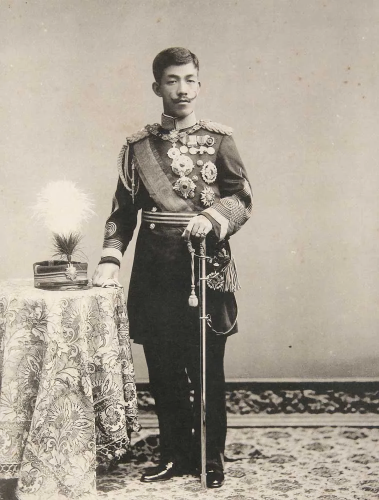
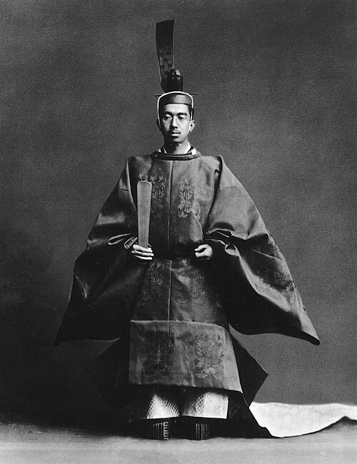
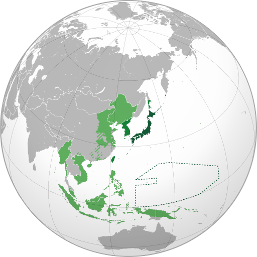
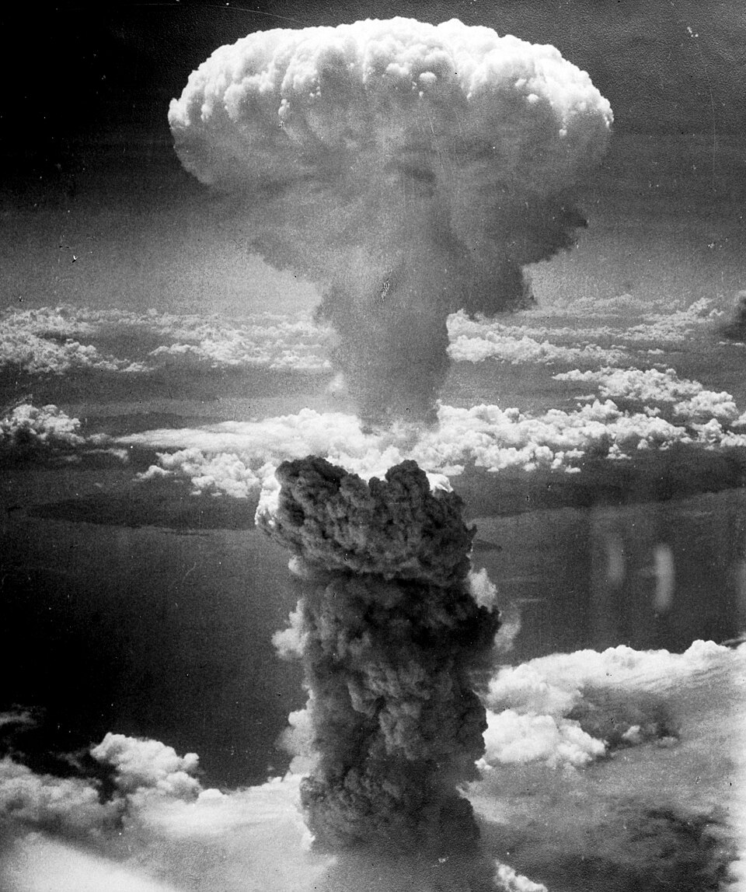
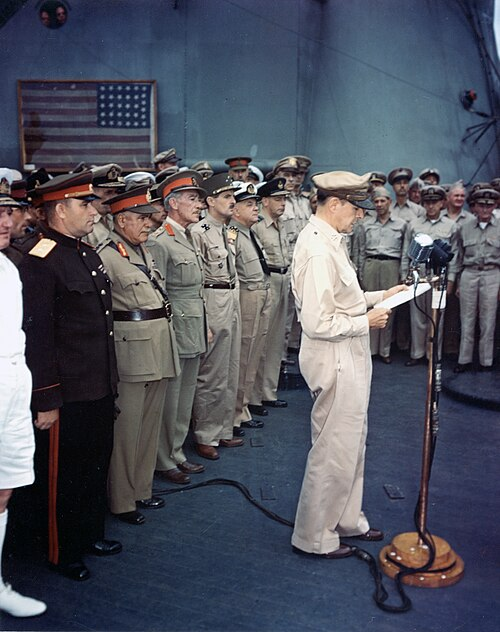
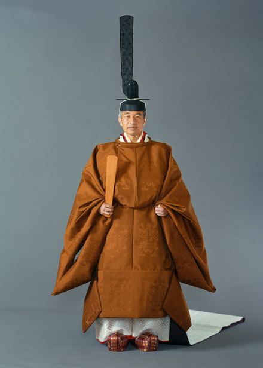
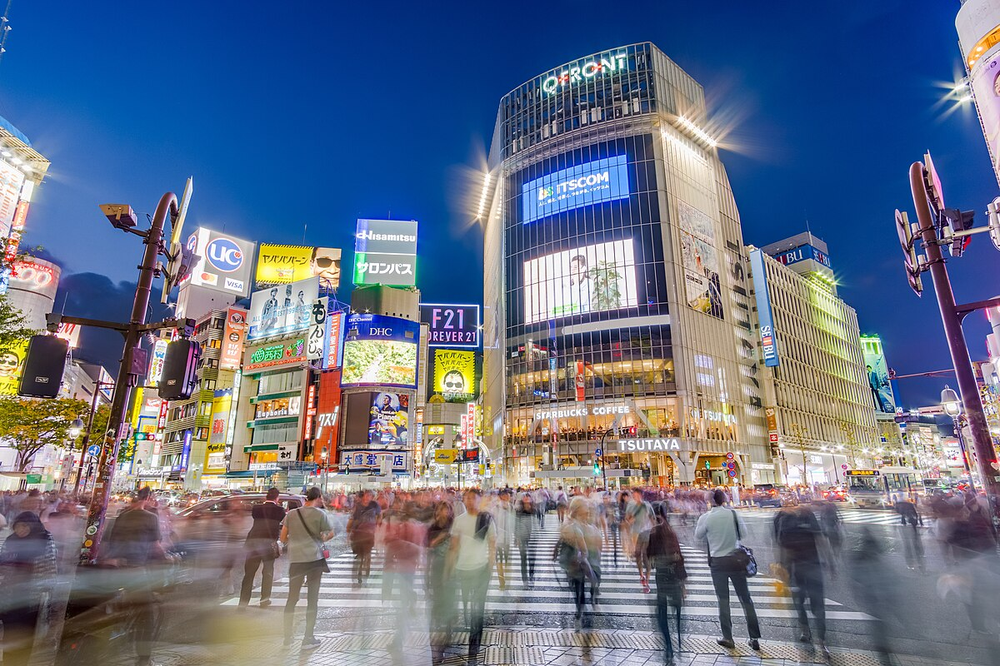
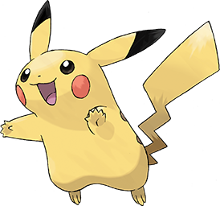

Emperor Taisho
The Taishō period (1912-1926) is often remembered as an era of political experimentation and liberalization within Japan. With Emperor Meiji's death and the ascension of sickly Emperor Taisho, political authority increasingly shifted to elected officials and political parties. This decentralization of imperial influence created space for a parliamentary system to flourish. During this period, parties like the Seiyūkai and Minseitō gained power, and cabinets began to be formed based not solely on oligarchic choice but on parliamentary majorities.
This movement toward democracy was accompanied by broader societal change. Urbanization accelerated, literacy rates improved, and new middle-class and working-class identities emerged. Intellectuals embraced Western philosophies, including liberalism, socialism, and women’s rights. The 1925 enactment of universal male suffrage greatly expanded political participation, signaling that Japan was moving closer to a representative government. Newspapers, magazines, and civic organizations became important drivers of public opinion, adding to the vibrancy of political life.
Yet beneath the surface, tensions simmered. The same year that universal suffrage was introduced, the government passed the Peace Preservation Law, which criminalized dissent against the emperor and the political order. Economic challenges—including the aftermath of World War I, the 1923 Great Kantō Earthquake, and the global depression—created instability that undermined public confidence in party politics. Political corruption scandals also eroded trust, and dissatisfaction grew among rural populations, industrial workers, and the increasingly assertive military.
By the late 1920s and early 1930s, the military emerged as a powerful political actor. Frustrated with civilian leadership and driven by nationalist ideology, military officers argued that Japan needed to expand its empire to secure resources and protect national interests. A series of political assassinations, coupled with the military's escalating influence in foreign affairs, especially after the Manchurian Incident of 1931, weakened parliamentary control. By the mid-1930s, Japan had effectively transitioned from Taishō-era democratic experimentation to a militarist government that prioritized expansionism, discipline, and loyalty to the emperor.
This transformation marked a decisive turning point: the democratic gains of the Taishō period had been overshadowed by authoritarian nationalism, setting the stage for Japan's involvement in global conflict. Emperor Taisho died in 1926 and was succeeded by Emperor Hirohito.

Emperor Hirohito (known posthumously as Emperor Showa)
Japan's militarist expansion in the 1930s culminated in the outbreak of full-scale war in Asia, beginning with the invasion of China in 1937. The attack on Pearl Harbor in December 1941 drew the United States into the conflict and transformed regional hostilities into the Pacific theater of World War II. For much of the early war, Japan's military achieved rapid victories across Southeast Asia and the Pacific, establishing a vast empire. However, by 1943, the tide had turned as Allied forces began reclaiming territory through a series of costly battles. Japan faced mounting losses, severe resource shortages, and widespread destruction from air raids.
By 1945, Japan's situation was untenable. The atomic bombings of Hiroshima and Nagasaki, combined with the Soviet Union's declaration of war, pushed Japan to surrender unconditionally in August 1945. The war brought unimaginable suffering: millions of soldiers and civilians died, cities lay in ruins, and the economy collapsed. The surrender ended Japan's imperial ambitions and marked the beginning of a new chapter under Allied occupation.

The Japanese Empire in the 1940s

The Atomic Bombing of Nagasaki

Japan surrenders 1945. The flag in the background is the same flag flown by Perry in 1853
The U.S.-led occupation, which lasted from 1945 to 1952, reshaped Japan's political and social landscape. General Douglas MacArthur and the occupation authorities implemented sweeping reforms, including the demilitarization of Japan, the prosecution of wartime leaders, and land reform programs that strengthened rural communities. Most transformative was the 1947 Constitution, which introduced democratic governance, guaranteed civil liberties, and—most famously—renounced war under Article 9. Women gained the right to vote, labor unions grew, and education was democratized.
Post-war reconstruction was challenging but ultimately successful. With U.S. economic aid and the demands of the Korean War fueling industrial production, Japan experienced rapid economic growth in the 1950s and 1960s. Modern industries—especially automobiles, electronics, and steel—propelled Japan into the global economy. By the 1970s, Japan had become one of the world's leading economic powers, creating what became known as the “Japanese economic miracle.”
This remarkable turnaround helped reshape Japan's international identity. From the ruins of 1945 emerged a pacifist, democratic, and economically vibrant nation—one that would play a major role in global trade and technological innovation for decades to come.

Emperor Akihito
The “Lost Decade” refers to the prolonged economic stagnation Japan experienced during the 1990s, although many scholars argue that the slowdown lasted well into the 2000s. The crisis began after the collapse of a massive asset bubble that had formed in the late 1980s. During that period, stock prices and real estate values skyrocketed due to speculative investment, easy credit, and overconfidence in Japan's economic dominance. When the bubble burst around 1991, asset prices plummeted, banks faltered, and the economy began to contract.
One of the most significant challenges was the banking crisis. Japanese banks had made enormous loans backed by inflated real estate values. When land prices collapsed, these loans became "non-performing," leaving banks with huge losses. Rather than quickly writing off bad loans, many financial institutions concealed them, resulting in a long-term credit freeze. Companies struggled to borrow and invest, and economic growth stagnated. This period of deflation and financial instability deeply affected businesses, consumers, and government policy.
The government attempted several measures to rekindle growth, including public works spending, interest rate cuts, and financial-sector reforms. However, these efforts often came too slowly or cautiously. Deflation persisted, reducing consumer spending and discouraging investment. The employment system—based on lifetime employment and seniority—also limited corporate flexibility, making it difficult for firms to adapt to new economic realities. As a result, Japan faced years of sluggish growth, declining consumer confidence, and increased public debt.
Social consequences were equally significant. Traditionally stable sectors like manufacturing and banking shed jobs, and economic insecurity grew among younger generations. The term "freeter" emerged to describe young people stuck in part-time or unstable work, while hikikomori became increasingly recognized as a social phenomenon tied partly to economic pressures. The Lost Decade contributed to Japan's long-term demographic challenges, including lower birth rates and delayed family formation.
Despite the difficulties, the Lost Decade also prompted important reforms. Banking regulations were strengthened, failing institutions were consolidated, and new policies aimed to modernize corporate governance. Although the recovery was uneven, Japan gradually stabilized, emerging from the crisis with a more resilient—if less rapidly growing—economy. The legacy of the Lost Decade continues to shape Japanese policymaking and serves as a cautionary tale for other economies facing asset bubbles and deflation.

The Shibuya Crossing in Tokyo
A shinkansen bullet train

Japan is known for such media franchises as Pokemon
In the twentieth century, Japan underwent a remarkable cultural transformation, balancing rapid modernization with the preservation of deep-rooted traditions. From the global rise of Japanese cinema and literature to the enduring influence of practices like tea ceremony and calligraphy, the nation showcased its ability to innovate without losing its cultural identity. This era also saw Japan's pop culture—anime, manga, and video games—emerge as powerful creative forces that captivated audiences worldwide.
At the same time, Japan's position on the world stage changed dramatically as it evolved into a leading economic and technological power. Its commitment to peace, diplomacy, and international cooperation helped reshape its global reputation, while its industries—from automobiles to electronics—set new benchmarks of quality and innovation. By the end of the century, Japan stood not only as a cultural trendsetter but also as a key contributor to global progress, blending tradition and modernity in a way uniquely its own.